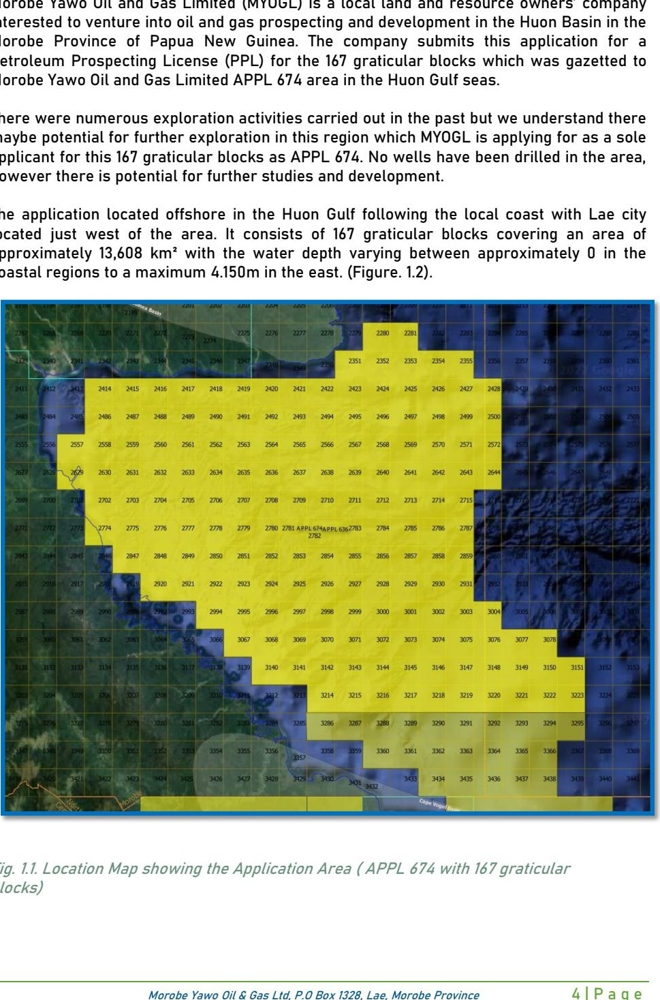

ABOUT MOROBE YAWO OIL & GAS LIMITED
A Papua New Guinea Energy Company with a Long-Term Vision
Morobe Yawo Oil & Gas Limited (MYOGL) is an independent Papua New Guinea energy company focused on responsibly advancing offshore petroleum exploration opportunities through disciplined evaluation, transparent engagement and strategic long-term partnerships.
With APPL 674 as its flagship exploration application in the Huon Basin, MYOGL is building a platform for responsible project advancement, international collaboration and long-term stakeholder value.
WHO WE ARE
Advancing Opportunity Through Discipline, Integrity and Partnership
Morobe Yawo Oil & Gas Limited is focused on the responsible advancement of petroleum exploration opportunities in Papua New Guinea. The Company seeks to combine local commitment with international technical, financial and strategic collaboration.
MYOGL's approach is grounded in disciplined project evaluation, regulatory engagement, responsible environmental stewardship and constructive relationships with government authorities, technical specialists, investors, industry participants and other stakeholders.
The Company's flagship opportunity is APPL 674, an offshore petroleum exploration application covering approximately 13,608 km² across 167 graticular blocks within the Huon Basin. MYOGL's objective is to advance the opportunity responsibly and progressively, subject to regulatory processes, technical evaluation, financing and appropriate partnership arrangements.
Contact MYOGLLOCAL COMMITMENT
A Papua New Guinea company focused on long-term national participation, responsible engagement and enduring stakeholder value.
INTERNATIONAL OUTLOOK
Open to collaboration with qualified technical, financial and strategic partners capable of supporting responsible project advancement.
DISCIPLINED APPROACH
Focused on evidence-based evaluation, transparent communication, regulatory compliance and staged long-term development.
OUR DIRECTION
Mission, Vision and Strategy
Mission
To advance responsible offshore energy exploration through integrity, disciplined evaluation and long-term partnerships that seek to create sustainable value for Papua New Guinea and its stakeholders.
Vision
To build a respected Papua New Guinea energy company recognised for responsible exploration, credible partnerships, transparent engagement and a long-term commitment to national development.
Strategy
To progress high-potential opportunities through staged technical evaluation, appropriate financing, regulatory engagement and collaboration with experienced industry partners.
Partnership Model
To engage qualified investors, technical specialists and strategic organisations whose capabilities align with responsible, long-term project advancement.

PAPUA NEW GUINEA
Locally Rooted. Internationally Engaged.
MYOGL's corporate direction reflects a long-term commitment to Papua New Guinea and a recognition that frontier offshore exploration requires strong technical capability, patient capital, responsible governance and credible collaboration.
The Company seeks to create a bridge between Papua New Guinea opportunity and qualified international expertise while maintaining a clear focus on responsible engagement, regulatory processes and sustainable long-term value.
National Perspective
Focused on responsible participation in Papua New Guinea's long-term energy and economic development.
Strategic Collaboration
Engaging organisations that can contribute relevant technical, financial and project-development capability.
Long-Term Outlook
Recognising that frontier exploration requires staged decisions, disciplined evaluation and patient partnership.
Stakeholder Value
Seeking outcomes that support responsible corporate development and constructive long-term stakeholder relationships.
HOW WE WORK
Principles for Responsible Project Advancement
MYOGL believes credible long-term project development depends on clear communication, disciplined decision-making and partnerships aligned around responsible outcomes.
Integrity
Communicating project status carefully and engaging stakeholders with professionalism, transparency and respect.
Technical Discipline
Supporting staged evaluation and informed decisions through appropriate expertise and recognised industry practices.
Responsible Stewardship
Recognising environmental, regulatory and stakeholder responsibilities as central considerations in project advancement.
Long-Term Partnership
Building relationships with organisations whose capabilities, values and time horizons support responsible development.
FLAGSHIP OPPORTUNITY
APPL 674 – Huon Basin
APPL 674 is MYOGL's flagship offshore petroleum exploration application in the Huon Basin of Papua New Guinea. The application area is presented as approximately 13,608 km² across 167 graticular blocks, with water-depth context up to approximately 4,200 metres.
Frontier Setting
An offshore exploration opportunity requiring disciplined technical evaluation and staged project progression.
Large Application Area
Approximately 13,608 km² across 167 graticular blocks within the Huon Basin context.
Partnership Opportunity
MYOGL welcomes engagement with qualified organisations capable of contributing relevant capital, expertise and strategic capability.
Responsible Progression
Future activity remains subject to regulatory processes, technical work, financing and appropriate project arrangements.

Paul Sepet
Founder & Managing Director
Providing strategic leadership and long-term vision for MYOGL's corporate and exploration objectives.

Simon Karapus
Director
Supporting project development, stakeholder engagement and operational coordination within Papua New Guinea.

Johnathan D'sa
Director – Investor Relations & Corporate Affairs
Leading international investor engagement, strategic communications and corporate development initiatives.
LEADERSHIP
Leadership Focused on Responsible Long-Term Progress
MYOGL is guided by a leadership team focused on responsible project advancement, stakeholder engagement and the development of credible strategic relationships capable of supporting the Company's long-term objectives.
STRATEGIC ENGAGEMENT
Building the Right Partnerships for Long-Term Opportunity
MYOGL welcomes discussions with qualified investors, technical partners and industry stakeholders interested in responsible offshore exploration and the potential advancement of APPL 674.
Organisations seeking strategic participation, technical collaboration or further corporate information are invited to contact the Company.
Investor Relations
Johnathan D'sa
Director – Investor Relations & Corporate Affairs
jd@myogl.bizFor strategic investment discussions, technical partnerships and corporate enquiries relating to APPL 674.